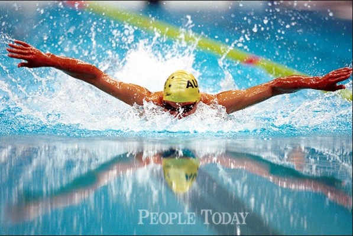
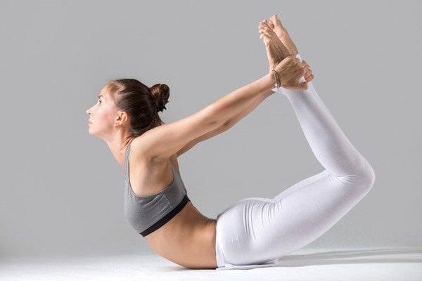
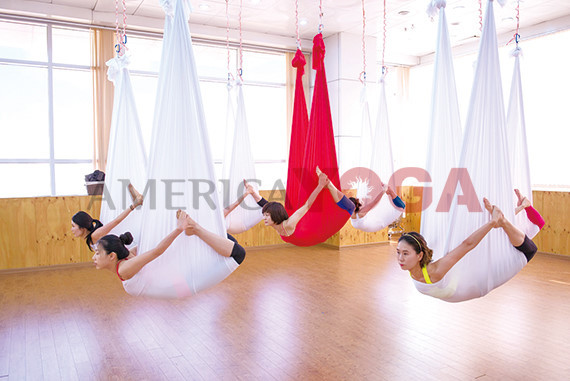

∙축구: 뛰면 우리 심폐지구력과 폐활량 등등이 향상
∙수영
1. 수영이 전신 운동이라는 점에 의해 큰 호흡 운동을 요구하기 때문에 근육이나 심폐의 발달에 좋다.
2. 피부 단련에 효과가 크다. 수중 안전에 대한 자신감뿐만 아니라 다른 사람의 안전에 도움을 줄 수 있다.
3. 인내심을 기를 수도 있다.
∙줄넘기:주로 발바닥 앞부분으로 뛰는 특수한 상하운동으로 발목, 장딴지, 무릎, 허리 등 강도 높은 자극으로 각 신체의 기능을 강화시켜 준다.
 ∙요가
1. 몸의 균형을 바로 잡아주고 유연성을 향상시킨다.
2. 기혈의 순환을 원활하게 하여 노화 방지 및 미용에 효과적이다.
3. 호흡법을 통해 마음을 안정시킬 수 있다.
4. 집중력과 기억력이 증대되고 스트레스 해소에 많은 도움을 준다.
5. 체내의 독소와 노폐물을 배출시켜 내장 기관을 튼튼하게 한다.
6. 평소 잘 쓰지 않는 근육들을 사용하여 몸의 군살을 없애준다.
7. 자신의 통제력과 조절 능력을 향상시키는 심리적 효과가 있다.
※플라잉요가
-허리나 척추에 문제가 있는 사람들에게 좋은 운동
-해먹을 이용해 공중에 떠있기 때문에 척추의 압박이 덜하고, 거꾸로 매달리는 자세에서 척추 사이사이르 늘려주는 동작들이 많다